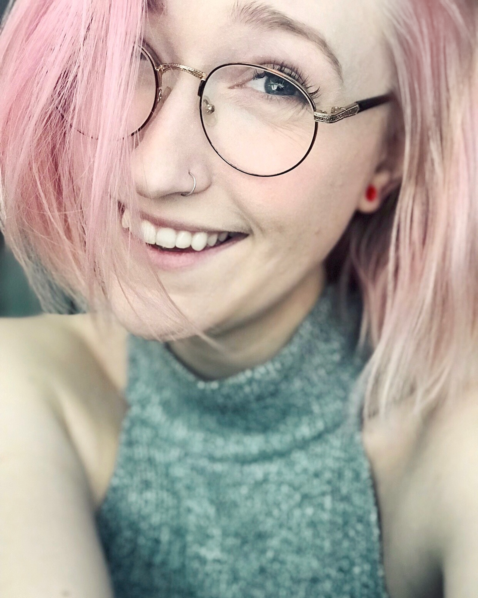

A bit about me

Hello, I am Lindsey. I am a web designer and developer, 3D artist, animator, UI/UX designer, and web accessibility advocate. Generally speaking, I am just a big tech nerd.
I have my father to thank for my fascination with computers as he brought home our very own PC in the late ‘90s… Remember Windows ’95? It was in that folding chair in front the signature grey tube monitor, that I embarked into a lifelong journey to understand as much as I could about computer technology.
Flash forward to now: I will receive my bachelor’s degree from Arizona State University in Spring of 2021, and a master’s in graphic information technology in 2022. I hope to venture into many different careers in the tech industry with hopes to make a difference.